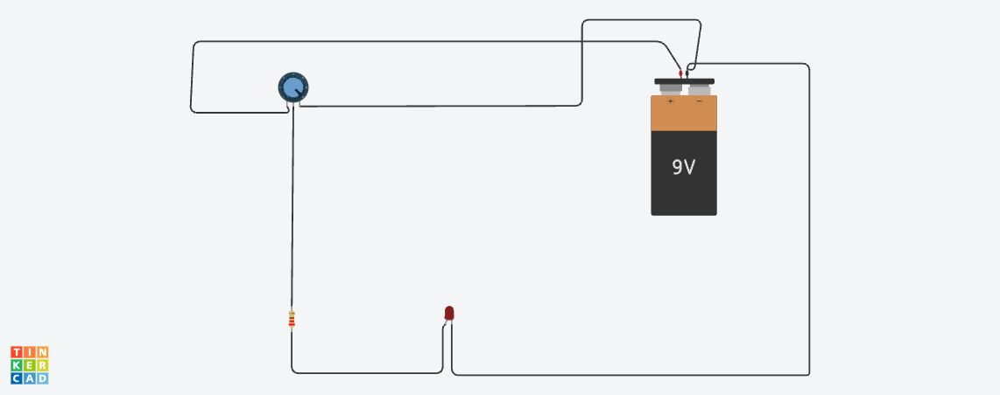

Federal Institute of Science and Technology (FISAT)
📖 My Journey
My name is Adithy Shibu, a passionate engineering student pursuing my Bachelor
of Technology at Federal Institute of Science and Technology (FISAT). My academic
journey has introduced me to exciting areas of engineering, innovation, and
problem-solving.
I enjoy exploring technologies that can create positive impacts on society.
Whether it is renewable energy solutions or robotic systems, I am always curious
to understand how engineering can improve efficiency and sustainability.
I believe every project teaches valuable lessons. Through teamwork,
experimentation, and continuous learning, I strive to develop practical skills
that complement my theoretical knowledge.
👤 Personal Profile
Name
Adithy Shibu
Institution
Federal Institute of Science and Technology
Qualification
B.Tech Student
Interests
Robotics, Renewable Energy, Electronics
Career Goal
To become an innovative engineer creating sustainable solutions
🚀 Featured Projects
☀ Solar Copra Dryer
Renewable Energy Based Drying System
The Solar Copra Dryer was developed as an eco-friendly solution for drying
copra using solar energy. The project aims to reduce dependence on conventional
fuel sources while improving drying efficiency and preserving product quality.
This project helped me understand renewable energy utilization, system design,
and practical implementation of sustainable engineering concepts.
🤖 Rover Project

Autonomous / Remote Controlled Rover
LED Brightness Control Circuit
Designed and simulated an LED brightness control circuit in Tinkercad using a 9V battery, resistor, potentiometer, and LED. The project demonstrates basic electronics concepts by varying resistance to regulate current flow and adjust LED brightness, providing hands-on experience with circuit design and component functionality.
Working on this project enhanced my understanding of robotics, teamwork,
problem-solving, and engineering design principles.
💡 Areas of Interest
Robotics
Robotics combines electronics, programming, and mechanical systems to create
intelligent machines capable of performing complex tasks.
Renewable Energy
Renewable energy technologies provide sustainable alternatives to traditional
energy resources and contribute to environmental conservation.
Electronics and Innovation
Electronics forms the foundation of modern technological advancement and
enables the development of innovative solutions across industries.